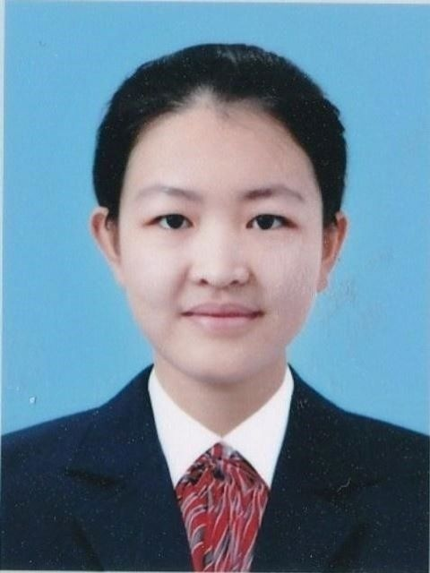

————Welcome to Daladai's World.
Brief Introduction
代航(Christina)：

女/18岁/2002年3月11日生/吉林长春
肯定式生活/钟爱孤独/疏离但热爱/随心随遇
医学生Pharmacy/BJMU北京大学医学部/PKUer
古筝/篮球/排球/游泳/主持/演讲/摄影
民谣/Choral/Absolute music/English
Curriculum Vitae
2008.09-2014.07 长春外国语实验学校 大队委、班长 小学
综合排名第一，选拔进入东北师范大学附属中学初、高连读统招班。
2014.09-2017.07 东北师范大学附属中学明珠学校 学生会主席 中学
综合排名第二，选拔进入东北师范大学附属中学创新统招班、荣誉班
2017.09-2019.07 东北师范大学附属中学
创新班、荣誉班 学生会副主席 高中
综合排名第18，兼班长、语文课代表、英语课代表。
2018.07.15-07.22 樱花科技交流项目 日本
Sakura Sciecne Club2008.09-2014.06 长春外国语实验学校 大队委、班长
曾组织、主持升旗仪式、开学典礼、运动会及各次中队活动；
组织募捐活动，在学校和社会范围内为患白血病同学筹款近10万元。
2014.09-2017.06 东北师范大学附属中学明珠校区 学生会主席
多次组织、主持学校大型活动，青海地震募捐、爱心志愿者行动。
2017.09-2020.06 东北师范大学附属中学 学生会副主席
组织、主持学校英语演讲大赛、辨论赛、校报校长有约栏目、校科技节海报大赛、生态设计与制作大赛和班级各种活动。
主持、组织升旗仪式演讲、清明公益祭扫、阳光体育节系列比赛、学生干部素质拓展训练、十八届校运动会等活动。
2013年6月 获长春市教育局颁发“长春市优秀学生”。
2016年7月 获吉林省教育厅颁发“吉林省优秀学生”。
2019年5月 评为“长春市优秀共青团员”。
2019年8月 获2019“外研社杯全国中学生外语素养大赛二等奖。
2018年3月 获第十三届“课堂内外杯创新作文大赛”高中组三等奖。
2018年9月 获校教育发展基金会“2017-2018学年度陶然成长奖”。
2019年9月 获校教育发展基金会“2018-2019学年度陶然成长奖”。
2019年1月 获2018-2019学年上学期校“三好学生”。
2019年1月 获2018-2019学年上学期校“优秀学生干部”。
其它荣誉：曾获全国中学生英语能力竞赛一等奖，全国数学联赛二等奖、校陶然成长奖（中学）、各学年特等校长奖学金。被评为爱心志愿者优秀个人、好习惯好少年标兵、校高一年级海报展特等奖等等。
Recent Life
- 初遇燕园
- 初遇BJMU
- 旧叙·新路
年少时曾有一个燕园的梦，梦里她古塔巍峨，红楼飞雪；如今一朝梦圆，眼中是未名博雅，家国天下。“愿岁月无负天地，愿此生辽阔高远。”此间少年，狂歌竞夜，收拾山河，待百年约。
Compositions
山深水深情亦深 －－山水游记品诗情
“小山重叠金明灭，鬂云欲度香腮雪”。古来无数公子佳人借山水、风雨传递情思、互通心意。同样，在多情的才子骚客笔下，似有生命涌动的自然风物也寄寓了无限的喜乐悲欢。 游记文学以山水名胜古迹为依托，作家为名胜而来，作品又为名胜增色，充满了生动浪漫的情趣。人因景至，景因人名，山水也逐渐有了厚重的文化内涵和审美意蕴。 所谓山水游记散文，写景状物，栩栩如生；融情于景，动人心弦；记游说理，含蓄隽永；语言优美，妙笔生花。
“天苍苍，水茫茫，大孤小孤江中央”，在陆游《入蜀记》的选文中，从峰火矶，转小孤山，再到澎浪矶；经彭蠡口，过大孤山，抵江州湓浦，作者将各个景物有机地结合起来，又不失每个景象独特的风貌与形象，写烽火矾“嵌岩窦穴，怪奇万状，色泽莹润”、写小孤山“碧峰巉然孤起，上千云霄”。我们从中不难看出作者笔墨挥洒背后，内心的惊奇与喜悦。同样，读到文中“不附山，杰然特起”的句子，我们又隐约看到陆游不屈于权势，坚守高傲情怀的倔强与从容。
柳宗元在屡遭贬谪后写下“潭西南而望，斗折蛇行，明灭可见。其岸势犬牙差互，不可知其源”。虽写小石潭两岸极尽曲折，却又何尝不是指此时内心的迷惘和落寞，即使有游鱼“俶尔远逝，往来翕思。似与游者相乐”，沉重的政治失意又岂是一时之乐可排遣的呢？还有欧阳修《醉翁亭记》更是借夕阳时分，人鸟散去之景，慨叹“太守之乐”终归无人知。这是一种高处的寂寞与失落，最终也只有一句“醉翁之意不在酒”啊！
景中融情，情中寓理。多愁善感之人总要有些行解情思的媒介，而云山苍苍，天风荡荡，一方春水池塘，千山秋雨落木，便成了最恰切也最含蓄的载体，饮食了千百年来中华文化的山水和诗的意境。
山深，水深，莫不及情深。
斯人独憔悴 －－记建筑师梁思成先生
“冠盖满京华，斯人独憔悴。”他的心中是“峻极神工”的盛世图景，他的笔下是构思精巧的建筑图纸，却穷尽一生守不住北京城。
我看到，那憔悴的身躯包容着的是极度丰盈的灵魂。
我向来认为，建筑学是集艺术与工程为一体的学问，建筑是一砖一瓦的砌累，而人则是生命与艺术的展现。将值得尊重的生命与值得关注的工程完美结合，就是建筑师的意义。从对《营造法式》的虔诚到徒手攀爬十米高的应县塔，梁思成瘦高的身体里藏着强大的精神蕴藉，他坚信那些古建筑中历史辉煌的昭示和动荡的见证，坚信一砖一石中一个民族的特质与文化的沉淀。我惋惜，信仰被折辱时那一个的悲恸，那是精神的落寞。
“他们拆掉一栋楼，就是扒掉我的一层皮；推倒一面墙，就是割掉我的一块肉。”《梁陈计划》呈上去太久了，梁思成的一颗心沉得越深了。他像个灰头土脸的孩子，手里小心翼翼地护着半块留给母亲的面包；他又像一位风烛残年的老人，颤抖着双手想要保护些什么，那些被舍弃的珍宝。
他太苦了，但仍心存美好，女儿梁再冰深情回忆说，虽然生活困苦，但父亲情绪饱满，有时画图时还哼哼唧唧地唱歌。我想，因为他明白，风后面是风，天空上面是天空，道路前面还是道路，所以他的嘴角总有一种刚毅，所以他怀情远征，拓路踏歌。
在今天，我们对古今中外的所有人类建筑文明心怀感恩，无论是巴黎圣母院里巴西莫多含混而吃力的赞美，还是佛光寺中在肃穆中盘腿坐上一千年的古老神明，它们都绵延着一个民族伟大的人格。
但是喧哗过后，沉下一颗心来，最想念的人，却还是他。
一派山水，不青不灵，只沉默端坐，只枯瘦自立，惟愿他还是清朗眉眼，再无憔悴孤独。
在风中长眠 －－记画家林风眠先生
“日暮风吹，叶落依枝”，看他的画，目光中总是蒙上夕阳的光晕，好像喧哗将昼了，晚风携走了人间最后一丝系温，时而出现几笔寥落的、诡谲的色彩来填补心灵的空白，他是林风眠，有着典型的夜的性格。
长夜漫漫无光，他在迷蒙中摸索着前行。不论是提出“成立有独立个性的艺术学院”，还是呼喊“美育救国”，不变的是他那一番恳切的心意。就像他的一幅壁画所描绘的，古今中外的先贤、俊杰走成一列，相互扶持，大家在救国为民的路上艰难然而坚定地前进。上帝说：“要有光。于是便有了光”。中国人的内心长久以来没有信仰，可是林风眠先生的画作使人们陶醉于美的想象和体验，似有生命涌动。也许是上帝为中国送来了林风眠，让他的艺术代替宗教驱散了永夜的黑暗。
夜晚孕育着黎明的曙光，他的画作也蕴含着幽美的情致，有人称他“一个艺术的乞食者”，林风眠确如一个贪吃的孩子，急切地汲取艺术的养分。他出生在石匠家庭，从小便沉淀在古典文学的清韵雅致之中，于是笔下流淌的也是活的山水，和诗的一般的意境。他让我们视野为之一开，我们的俗情为之一扫，朝暾夕月，落崖惊风，化作他灵魂的本色。
夜是沉寂的，他是孤独的。发展需要变革，但是因循守旧的苟活者却总能获得卑鄙的通行证。林风眠不管，坚持自己“调和中西”的画风，选择将自己的生命作砝码，去与阻挡者抗衡，在“高尚”的天平上，那些人的生命已然失去了重量。人们不懂他的画。他被关在一个几平米的小屋子中，被批斗，被强迫亲手毁掉自己的作品，这般剜心之痛我们又岂能亲身体会？前无古人，知音寥寥，不忍质问苍天所为何来！
林风眠先生一生中经历过近半个世纪的苦难，但仍保持着很纯净的笑容，如今看来，大抵也只是用微笑稀释了这许许多多的泪水罢了。
在几十年后的今天，我们敬仰、尊崇着林风眠先生的艺术成就，希望能够长久地畅游于他的画作所描绘的世界。但是再多的遗恨也无法挽回他在轻薄、光滑的画纸上消磨了的一生，画纸风干了，长者在风中长眠。或许，他已不再在意。
梦里梦外盼梦圆 －－记雕塑家张充仁先生
他给泥土以生命，赋石头以感情，塑作人生百态，斧凿世事千秋。这是中国雕塑家张充仁，他的作品中涌动着最多的情，蕴含着最美的梦，却也是他最深的伤。
就到彼岸去，做一场永远也不醒的大梦。那是一个遥远的国度，繁华与平凡重叠，疏朗与绵密交织。微风好雨浇灌了他充沛的灵魂，刻刀下如有泉涌般才思与灵感。这是精神的高度自由，这是向着理想的神圣朝拜。可梦境太美好，总让人感到怅惘和缺失。当黎明的晓风吹拂面庞，张充仁决心，他要回家去。
可是当他的脚步踏上祖国的大地，灵魂早已深深颤抖：长年的战乱泯灭了一切，深重的苦难下，百姓生计尚无着落，何谈艺术的追求？张充仁的梦终于醒来，随之觉醒的是他的家国之责。
“中国人不懂，我的责任就是让他们懂”。谈起雕塑，他这样对外国友人说。伴随着纪录片沉着有力的音乐，他的字字铿锵如雕刻一般镌刻在我的心上，于是他的手下有了苦难，有了沉思，有了那一份对于同胞、对于祖国的最浓厚的情感。
人们总要从梦中醒来，但他的似乎犹为残忍与艰辛，当梦碎了，平日温文尔雅的他变得格外硬朗，忍痛一块块拾起。即使是面对后来不公的批斗，他也能够站在心灵的制高点上选择包容与原谅，我想，这一切的一切都源于他守望国安的信念，和祈盼梦圆的热忱。
梦里优游，梦外清醒，唯盼梦圆。“以冷静的眼光，作真实的描写”，这是一名雕塑家的职责，是一个爱国者的使命。
伊甸之梦
创世之初，亚当和夏娃因偷食禁果而拥有思想，也因此被上帝逐出伊甸园。古老的神话在千百年前己向我们揭示了人性的本质——欲望。
奥斯维辛是人性之恶的代名词。在奥斯维辛，没有地方甚至于一个角落能供给良知，随处可见的是最原始的动物本性，是同类之间的伤害、欺侮、残杀。“地狱空荡荡，魔鬼在人间”，在没有底线的罪恶面前，我们放下了祝福祈祷的手。
迈步离开集中营，人们不禁抬手挡了一下久违的阳光。在铁栅门前，孩子们在嬉戏跑闹，雏菊正在怒放。
曾有这样一个问题，“集中营是用来干什么的？”我要说，是用来打破的，我们无法规避原罪的惩罚，但我们感恩思想和道德的馈赠，让我们有机会在爱和希望的基底上构建人类文明的金字塔，我相信总有一天，阳光普照大地，我们心中的奥斯维辛彻塌，人类重返雏菊怒放的伊甸园。
有时我不禁感慨，这是一段让文明蒙羞的岁月，种族歧视让黑种人成了自己国土上的流民，统治者被欲望驱役，世界成了非正义和压迫的热浪逼人的荒漠之洲。
但是，我们的权利从非谴责与相互埋怨，而是通过自己的力量为人间做一些改变。我们将心存“人人生而平等”的信念，不以皮肤的颜色而以品格的优劣作为评判标准。我们坚信有一天，深谷弥合，高山夷平，歧路化坦途，曲径成通衢，上帝光华再现，普天下生灵共谒。
我们生而为人的使命不是放任与懊悔，是对自己的救赎，“人是一根思想的芦苇”，不恋伊甸园无知的单纯，而凭智慧和知识重建属于我们的文明，总有一天，通天的巴别塔会冠以人类的名字。
殉天下 - -记马相伯先生
“其实人跟树是一样的，越是向往高处的阳光，它的根就越要伸向黑暗的地底。”马相伯先生穷尽一生为国追寻高处之自由，所以他的灵魂也深深地根植在他脚下的那片贫瘠的土地，将他与国家的血脉紧紧牵系。
犹记父亲当年为给朝廷起草文书而生生劳累至死，马相伯怀揣着一个爱国青年的热血与壮志，头也不回地走上了改革变法的道路。“天将降大任于斯人也，必先苦其心志，劳其筋骨。”马相伯失败了，他的整个青春壮年也因此葬送了。也许该放弃了，春满园蔬，微风好雨难道不好吗？但当他走出家门，看见天边凄艳的晚霞，看见中国苦难的土地上还挣扎着爬的人民，他无法选择停止。人带着使命生存，抱着镣铐起舞。救亡图存，是他生命的意义。
很难想象生长在腐败清王朝的他，会拥有“科学救国”的高远见地。他是中国提出培养学生“原创力”精神的第一人；他将“学术独立，思想自由”当作办学的根本。在抄袭现象普遍存在的今天，学术界每一个有自知、有良知的人都应该默念这八个字－－当初的那间灰暗的小教室里，疲之不堪的人站在破旧的讲台上发出的震聋发聩的声音，这顶天立地的誓言足以穿越时间，久久回荡在我们耳边。
“国无宁土，民无聊生”，马相伯先生本着“御侮自救，共赴国难”的信念，一生无休止地行走在前进的路上，可最终还是发出“我是一条狗，叫了一百年也没有把中国叫醒”这样辛酸无奈的感慨，这是他永远的遗憾，也使我们有了心底最深处的那一份无言的伤痛。
“谁终将声震人间，必长久深自缄默；谁终将点燃闪电，必长久如云漂泊。”马相伯先生用生命为国殉难，做尽了所有“不可为而为”之事。不必心伤，斯人已逝，来者可追。正是因为有了他的指引，今天的我们才知道如何前行，才有了浩浩荡荡的走在路上的朝圣者。
山脚 - -记“寡言君子”梅贻琦先生
当世道的萧瑟秋风刮去了人生的绿叶，人们的灵魂无处荫蔽，是他张开瘦弱的肩膀，撑起一片学术的天堂。当更多的人选择无谓地向上攀爬去拥挤窄小的山尖，是他安然山脚，俯视流淌的溪流会心一笑，他就是清华大学校长，梅贻琦先生。
“大学者，非有大楼之谓也，乃有大师谓也。”大学的校园开放包容，各学派思想碰撞交融，各领域学者引领风骚，这里充满着自由的空气，莘莘学子感受到教育的元气和精神的力量，梅先生把这一切归功于“大师”，而否认着别人对自己的赞誉，只甘心做一个无甚风光的载体，一个幕后的组织者。这是他站在山脚，拒绝了属于自己的山巅的风景，却殊不知，如此直指云霄的高耸，都以坚实沉默的山底为前提，而他，正是那个身负千斤而任劳任怨的人。
“我希望大家有勇气去做一个平凡的人，不要去追求轰轰烈烈”。梅贻琦先生的这最后一句话，告慰自己，也是劝奉生人。梅先生寡言，因为他不需要通过语言去追逐，去渴求，去构诌。人们习惯于言语攻击，习惯于张口说一些连自己都不明白来由的谣传，习惯于茶余饭后，咀嚼他人的生活。太多口不择言，太多祸从口出……因为寡言，所以君子。
在今天，崇尚短暂刺激的一代再也体会不到沉静而明亮的文化氛围，再也不会乐于承担无名无利的责任，没有人再想望一望山脚，那朵未知名的花儿是否依然盛开，那个不堪重负的身影何时早已隐去。